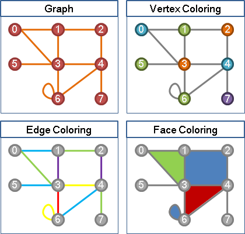
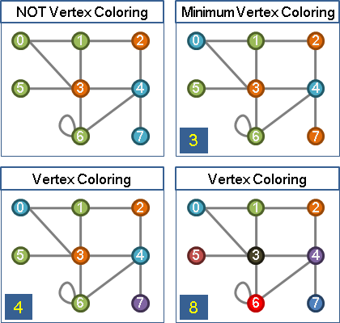
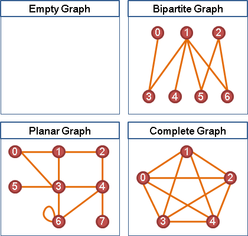
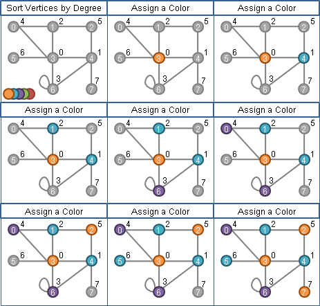
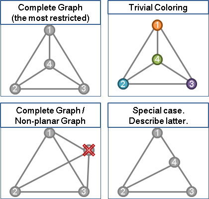
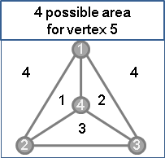
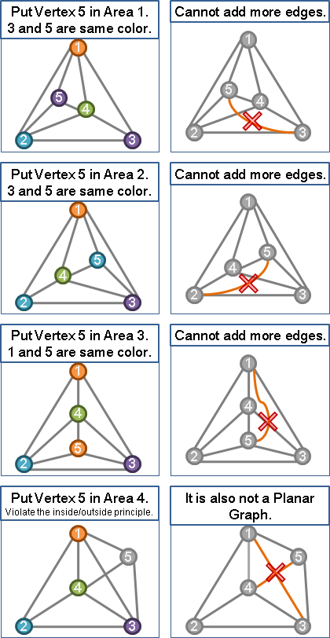
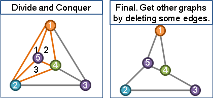
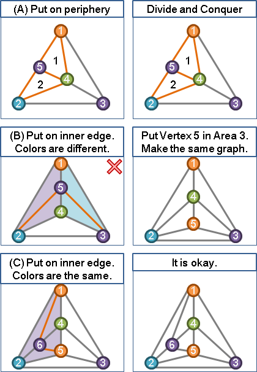

Coloring
Coloring
替一張圖的各個元件都塗上顏色，並規定相鄰元件不可同色。一張圖的上色情形，稱作一種「著色」。
根據元件的不同，著色可分為許多種類型，例如點著色（vertex coloring）、邊著色（edge coloring）、面著色（face coloring）。
【註：英文「Coloring」為名詞，中文「著色」為動詞，英翻中致使文法不通，請多見諒。】
Vertex Coloring
Vertex Coloring
「點著色」。替一張圖上的每個點塗上顏色，並且規定以邊相連的相鄰兩點不可同色。
Minimum Vertex Coloring與Chromatic Number
一張圖的「最小點著色」是顏色最少的點著色方式，可能有許多種；一張圖的「著色數」是最小點著色的顏色數目。
求最小點著色是NP-complete問題。有一些特殊的圖，可以推理得到著色數的上限：
G沒有點和邊：χ(G) = 0 G沒有邊：χ(G) ≤ 1 G為二分圖（Bipartite Graph）：χ(G) ≤ 2 G為平面圖（Planar Graph）：χ(G) ≤ 4（四色定理） G為完全圖（Complete Graph）：χ(G) = V G的每個點的連接邊數相同（k-regular）：χ(G) ≤ k + 1 G的每個點的連接邊數不同（non-regular），也就是一般的圖：χ(G) ≤ Δ(G) χ(G)：一張圖G的著色數。 Δ(G)：一張圖G的最大degree。
原圖的Minimum Vertex Coloring，等於補圖的Minimum Clique Cover。
UVa 10661 10004 10052
Greedy Vertex Coloring與Grundy Number
https://en.wikipedia.org/wiki/Grundy_number
因為最小點著色是NP-complete問題，於是有人轉為討論用貪心法進行點著色。當然啦，不保證著色數最小。
演算法：無向圖點著色（Welsh-Powell Algorithm）
一個簡單的Greedy演算法，找出其中一種點著色，但是不保證著色數最小。
首先把圖上每個點，依照degree由大到小排序，然後一一塗色。每一個點都先嘗試塗第一種顏色，若牴觸了已塗色的點，就換下一種顏色，直到顏色不牴觸為止。
每個點的度數範圍都只有0到V-1（不考慮多重的邊、不考慮自己連向自己的邊），故排序時可以採用Counting Sort，時間複雜度是O(V)。
每個點都著色的時間複雜度等同一次Graph Traversal的時間，如果圖的資料結構為adjacency matrix就是O(V^2)，如果圖的資料結構為adjacency lists就是O(V+E)。
UVa 10471
演算法：二分圖點著色
Graph Traversal即可判斷一張圖是否為二分圖，同時也能找出其中一種點著色，並且保證點著色數最小。
演算法：平面圖點著色（Four Color Theorem）
四色定理。給定一張真實的地圖，是否能用四種顏色，就把這張地圖上的每塊區域都塗上顏色，並且相鄰的區域不得同顏色。兩塊區域僅以點接觸，則不算相鄰；兩塊區域以邊接觸，才算是相鄰。
這樣的一張地圖其實可以化做圖論中的平面圖（planar graph），平面圖的定義是沒有重疊的邊的一張圖；另外要是我們移動圖上的點和邊，而讓邊不重疊，如此也算是一張平面圖。
目前四色定理的證明方式，是把所有的圖精簡成幾種基本款式，再用電腦逐一驗證是否能四著色。
最初的證明，一共有一千多種基本款式，1997年基本款式已被降到六百多種，然後也發明了一個O(N^2)四著色演算法（不保證著色數最小）：
http://people.math.gatech.edu/~thomas/FC/fourcolor.html
有些數學家認為，電腦窮舉不是一個嚴謹的、具有數學意義的證明方式，所以這個問題現今仍有人在持續研究。
下面提供一些個人想法，睡不著時加減想的，應該有誤：
甲、零個點、一個點、兩個點、三個點、四個點的圖，每個點分別塗一種顏色也不會超過四種顏色，所以應該不太需要證明了。
乙、點著色的問題，圖上的邊越多，限制就越多。完全圖（complete graph）的邊是最多的，所以只要完全圖可以解決，那麼只要從完全圖上刪掉幾條邊，其他邊比較少的圖也都可以解決了。因此，這裡我們考慮一下四個點的完全圖。
丙、由於點的編號順序是無所謂的，不失一般性，這裡我們規定前三點是最外圍的點，而之後的點皆會落在前三點所構成的範圍裡面。四個點一共將整個範圍切成四塊區域。（有一個特例是點剛好在邊上，留待最後討論。）
丁、第五點會落在這四塊區域的其中一塊。當然依照我們的順序規定，第五點是不可能落在第四塊區域的。若是第五點落在第一塊區域，那麼就將第五點塗上在他外邊對頂的那個點的顏色。其他區域也是類似的。
戊、決定第五點後，以Divide and Conquer的觀點來看，構成了一個子問題。其他的區域也還是可以再放入點。放好所有點之後，只要刪除了其中的邊，就可以做出任意一種平面圖了。
己、之前有個點在邊上的特例還沒解決。如果把點放在邊上面，可以歸類成三種情形：甲、放在最外圍的邊，乙、放在裡面的邊，但是邊的兩邊區域能容忍的顏色不相同，丙、放在裡面的邊，邊的兩邊能容忍的顏色相同。其中甲和丙都是合法操作，而乙則是不合法操作，可由別的方式來做出一樣的圖。
庚、最後再提供一種想法：被分割的區域們其實又形成了一個四色圖問題。
以上就是我想到的證明。謝謝收看。
Edge Coloring
Edge Coloring
「邊著色」。替一張圖上的每條邊塗上顏色，並且規定共用端點的邊不可同色。
Minimum Edge Coloring與Edge Chromatic Number
概念與Vertex Coloring相仿。
G為任意圖：χ'(G) ≥ Δ(G) G的每個點的連接邊數相同（k-regular）：χ'(G) = k or k + 1 χ'(G)：邊著色數 Δ(G)：一張圖G的最大degree。
UVa 10615
Total Coloring
Synchronizing Coloring
Weighted Coloring